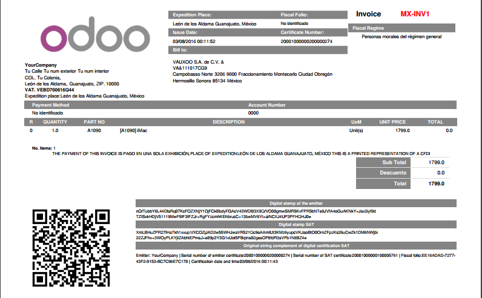
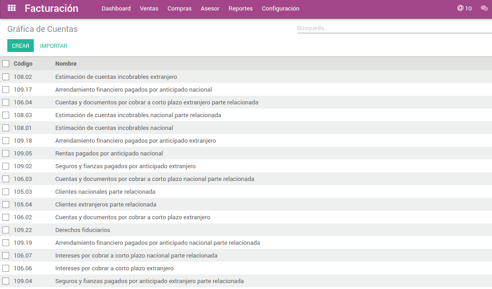
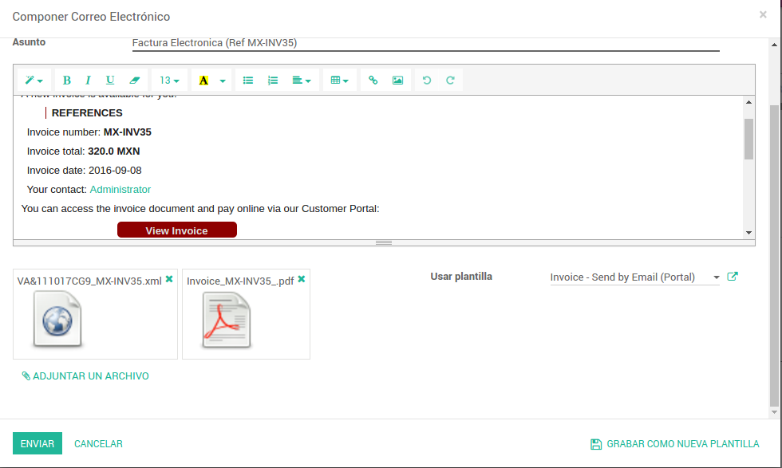

Mexican localization includes applications, manage their financial accounts, electronic accounting, electronic payroll, electronic invoicing, diot, taxes actually paid.
These applications are installed from this module is easy and fast.


This module adds rules on electronic accounting, also adds a wizard to generate the XML of accounts, XML of journal entries and XML of balance, across of the accounting in media Electronics from the fiscal year, period and journals. In the following references find more information.
This module helps set the CFDI electronic invoicing, with this module you can configure the mail template electronic import the template, also can set the outgoing mail server.

An Authorized Provider Certification CFDI (PAC), is one entity that is authorized by Sistema de Administración Tributaria(SAT) to validate the CFDI generated by taxpayers, assign folio and incorporate a digital seal SAT. It also has the obligation to send the SAT copy of the CFDI to validate their customers.
This module creates interface for e-invoice files from invoices with PAC Finkok. With this module can be signed and cancel electronic invoices massively.
This module creates interface for e-invoice files from invoices with Solución Factible. With this module has the functionality to sign and cancel electronic invoices massively.
This module creates interface for e-invoice files from invoices with PAC Smarterweb. With this module has the functionality to sign and cancel electronic invoices massively.
The informative statement of transactions with third parties is a tax obligation under the Law of value added tax (IVA) which is provided monthly to the Servicio Administración Tributaria (SAT), information on transactions with suppliers.
The tax actually paid/cashed in the move of payment. This program is distributed in the hope that it will be useful, It is the charge to all your payments i.e: Bought a desktop that charge VAT on this desk is the creditable taxes This program is distributed in the hope that it will be useful, Retained VAT is retained by suppliers: